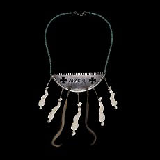
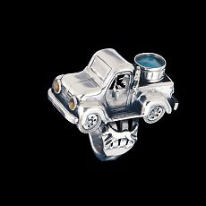

Department
of Africa, Oceania and the Americas >
research > fieldwork
> Native
American Jewellery of the Southwest USA
|
  |
In recent years the Department of Ethnography has looked to collect more systematically from the American Southwest. Arizona is the home to the Navajo Reservation - the largest single reservation - and few other regions today have as high a concentration of Native Americans or are as culturally diverse. For much of the 20th century, native arts and crafts - weaving, pottery, carving and silverwork - have played a vital role in sustaining these communities. However, the range and development of these arts has hitherto been poorly represented in the Department of Ethnography's collection. In 1997, Henrietta Lidchi embarked on building a broad and inclusive collection of jewellery from the Southwest. Southwestern jewellery is typified by the use of silver and turquoise but in this ostensibly simple union of stone and metal, one has the melding of two sets of traditions, a Puebloan lapidary tradition stretching back thousands of years, and the Navajo silversmithing tradition, conservatively dated as 150 years old, that has spread throughout the region. Since 1997, the Department of Ethnography's collection has increased to several hundred pieces, and this includes a range of significant pieces by known jewellers such as Victor Coochwytewa (Hopi), Christina Eustace (Zuni/Cochiti), Cippy Crazy Horse (Cochiti), Yazzie Johnson (Navajo) and Gail Bird (Santo Domingo), Smokey Gcachu (Zuni), Bob Haozous (Apache/Navajo), Michael Kabotie (Hopi), Monica Sioux King (Navajo/Pima/ Tohono O'odham), Clarence Lee (Navajo), McKee Platero (Navajo), Dylan Poblano (Zuni), Angie P. Reano (Santo Domingo), Joe Reano (Santo Domingo) and Perry Shorty (Navajo) to mention a few. Part of the purpose of collecting is to gather as much information about the methods of production, the materials and the thought processes of the many artists featured, and the collection is developed in parallel with notes, photographs, drawings and observations. Jewellery has sacred and secular associations. Turquoise, in particular, is important to many Native peoples of this area. Silver jewellery, in contrast, became popular and possible at a point when the monetary economy fully penetrated the Southwest at the end of the 19th century, and from this time on until the 1950s, silver jewellery, particularly for the Navajo people, has had a vital economic role, which was largely based on credit. |
Throughout its development from pre-contact times, Southwestern jewellery has been shaped by contact between native communities and/or with outsiders, such as traders, dealers, collectors, museums, and in accordance with the availability of tools and with the changing nature of demand. Jewellery is certainly one of the most widespread, dynamic and popular art forms in the Southwest, and the collection seeks to record this fact, from the point of view of the present, although making reference to older forms. Widely produced and avidly consumed by native and non-native alike, jewellery provides the means through which one can explore the numerous histories and cultures of the Southwest, their continuities and contemporary realities.
The collection also includes tools and materials, namely a tool box with stamps, torches, files and unfinished jewellery items, materials such as natural or synthetic stone, jewellery made in Southwestern style from South-east Asia, and pieces made in bench shops which were, and are, orientated more towards the souvenir hunter rather than the collector. The collection also includes several pieces made by unknown and unnamed artists in the early part of the 20th century. Part of the purpose of collecting is to gather as much information about the methods of production, the materials and the thought processes of the many artists featured, and the collection is developed in parallel with notes, photographs, drawings and observations.
links:
Traders: Voices from the Trading Post
Further reading
J. Adair, The Navajo and Pueblo Silversmiths (Norman, University of Oklahoma Press, 1944)
P.A. Baxter, Southwest Silver Jewelry (Atglen, Schiffer Publishing, 2001)
M. Bedinger, Indian Silver: Navajo and Pueblo Jewelers (Albuquerque, University of New Mexico Press, 1973)
E.M. Bennett, Turquoise and the Indian (Chicago, The Swallow Press Inc., 1966)
A. Bird, Heart of the Dragonfly: Historical Development of the Cross Necklaces for Pueblo and Navajo Peoples (Albuquerqe, Avanyu Publishing, 1992)
D. Cirillo, Southwestern Indian Jewellery (New York, Abbeville Press 1992)
L. Frank with M.J. Holbrook II, Indian Silver Jewelry of the Southwest, 1868-1930 (West Chester, Schiffer Publishing, 1990)
E.W. Jernigan, Jewelry of the Prehistoric Southwest (Santa Fe, SAR Press, Albuquerque, University of New Mexico Press, 1978)
A. Woodward, Navajo Silver: A Brief History of Navajo Silversmithing (Flagstaff, Northland Press, 1974)
M.N. Wright, Hopi Silver: The History and Hallmarks of Hopi Silversmithing (Flagstaff, Northland Press, 1989)